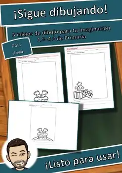
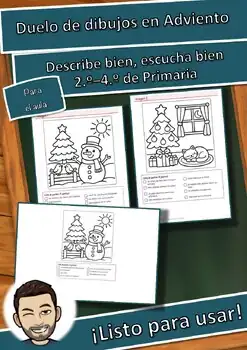
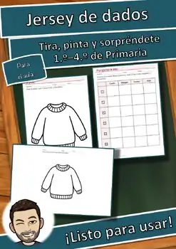
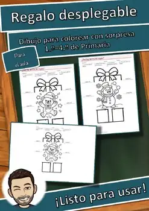

Fichas para 2.º de primaria
405 fichas en español para 2.º de primaria: PDF para imprimir, sin preparación y con solucionario – comprensión lectora y búsquedas del tesoro.
405 recursos
Materia
Por tema: Ciencias y salud

¡Sigue dibujando!: 5 inicios de dibujo para tu imaginación, 1.º–4.º de Primaria

Duelo de dibujos en Adviento: Describe bien, escucha bien, 2.º–4.º de Primaria

Jersey de dados: Tira, pinta y sorpréndete, 1.º–4.º de Primaria

Regalo desplegable: Dibujo para colorear con sorpresa, 1.º–4.º de Primaria
Amigo invisible en clase: Lectura, normas, papeletas y ficha, 2.º–4.º de Primaria
Amigo invisible en clase: Lectura, normas, papeletas y ficha, 2.º–4.º de Primaria
Dinosaurios para colorear, leer y construir: fichas y memory, 1.º–3.º
Dinosaurios para colorear, leer y construir: fichas y memory, 1.º–3.º
Exposición de continentes: paquete con los 7 continentes – paneles y fichas
Exposición de continentes: paquete con los 7 continentes – paneles y fichas
Exposición de continentes: Antártida – paneles y fichas en 3 niveles
Exposición de continentes: Antártida – paneles y fichas en 3 niveles
Ficha de álamo (Árbol/árboles)
Ficha de álamo (Árbol/árboles)
Ficha de abedul (Árbol/árboles)
Ficha de abedul (Árbol/árboles)
Comecocos: La rutina diaria – Muestra gratuita
Comecocos: La rutina diaria – Muestra gratuita
Comecocos: Insectos y bichos – Muestra gratuita
Comecocos: Insectos y bichos – Muestra gratuita
Comecocos: En el bosque – Muestra gratuita
Comecocos: En el bosque – Muestra gratuita
Comecocos: En la ciudad – Muestra gratuita
Comecocos: En la ciudad – Muestra gratuita
Tarjetas con pinzas: En la ciudad – Muestra gratuita
Tarjetas con pinzas: En la ciudad – Muestra gratuita
Comecocos: Dulces – Muestra gratuita
Comecocos: Dulces – Muestra gratuita
Tarjetas con pinzas: Dulces – Muestra gratuita
Tarjetas con pinzas: Dulces – Muestra gratuita
Comecocos: Emociones – Muestra gratuita
Comecocos: Emociones – Muestra gratuita
Tarjetas con pinzas: Emociones – Muestra gratuita
Tarjetas con pinzas: Emociones – Muestra gratuita
Comecocos: La música – Muestra gratuita
Comecocos: La música – Muestra gratuita
Tarjetas con pinzas: La música – Muestra gratuita
Tarjetas con pinzas: La música – Muestra gratuita
Comecocos: Higiene y cuidado personal – Muestra gratuita
Comecocos: Higiene y cuidado personal – Muestra gratuita
Tarjetas con pinzas: Higiene y cuidado personal – Muestra gratuita
Tarjetas con pinzas: Higiene y cuidado personal – Muestra gratuita
Tarjetas con pinzas: La rutina diaria – Muestra gratuita
Tarjetas con pinzas: La rutina diaria – Muestra gratuita
Tarjetas con pinzas: Insectos y bichos – Muestra gratuita
Tarjetas con pinzas: Insectos y bichos – Muestra gratuita
Tarjetas con pinzas: En el bosque – Muestra gratuita
Tarjetas con pinzas: En el bosque – Muestra gratuita
Comecocos: De compras – Muestra gratuita
Comecocos: De compras – Muestra gratuita
Tarjetas con pinzas: De compras – Muestra gratuita
Tarjetas con pinzas: De compras – Muestra gratuita
Comecocos: En la ciudad – Comecocos – 1.º a 4.º de Primaria
Comecocos: En la ciudad – Comecocos – 1.º a 4.º de Primaria
Tarjetas con pinzas: En la ciudad – Tarjetas con pinzas – 1.º a 4.º de Primaria
Tarjetas con pinzas: En la ciudad – Tarjetas con pinzas – 1.º a 4.º de Primaria
Comecocos: Dulces – Comecocos – 1.º a 4.º de Primaria
Comecocos: Dulces – Comecocos – 1.º a 4.º de Primaria
Tarjetas con pinzas: Dulces – Tarjetas con pinzas – 1.º a 4.º de Primaria
Tarjetas con pinzas: Dulces – Tarjetas con pinzas – 1.º a 4.º de Primaria
Comecocos: Emociones – Comecocos – 1.º a 4.º de Primaria
Comecocos: Emociones – Comecocos – 1.º a 4.º de Primaria
Tarjetas con pinzas: Emociones – Tarjetas con pinzas – 1.º a 4.º de Primaria
Tarjetas con pinzas: Emociones – Tarjetas con pinzas – 1.º a 4.º de Primaria
Comecocos: La música – Comecocos – 1.º a 4.º de Primaria
Comecocos: La música – Comecocos – 1.º a 4.º de Primaria
Faja para tableta de chocolate de Navidad: plantilla imprimible con 4 motivos (1.º–4.º)
Faja para tableta de chocolate de Navidad: plantilla imprimible con 4 motivos (1.º–4.º)
Tarjeta grande con taza y bolsillo: plantilla de Navidad con 3 personajes (1.º–4.º)
Tarjeta grande con taza y bolsillo: plantilla de Navidad con 3 personajes (1.º–4.º)
Tarjetas con pinzas: La música – Tarjetas con pinzas – 1.º a 4.º de Primaria
Tarjetas con pinzas: La música – Tarjetas con pinzas – 1.º a 4.º de Primaria
Comecocos: Higiene y cuidado personal – Comecocos – 1.º a 4.º de Primaria
Comecocos: Higiene y cuidado personal – Comecocos – 1.º a 4.º de Primaria
Tarjetas con pinzas: Higiene y cuidado personal – Tarjetas con pinzas – 1.º a 4.º de Primaria
Tarjetas con pinzas: Higiene y cuidado personal – Tarjetas con pinzas – 1.º a 4.º de Primaria
Comecocos: La rutina diaria – Comecocos – 1.º a 4.º de Primaria
Comecocos: La rutina diaria – Comecocos – 1.º a 4.º de Primaria
Calendario de Adviento para rascar para la clase: 24 casillas, versión rellena y en blanco (1.º–4.º)
Calendario de Adviento para rascar para la clase: 24 casillas, versión rellena y en blanco (1.º–4.º)
Tarjeta con caja de regalo y bolsillo: plantilla de Navidad con 4 personajes para vales (1.º–4.º)
Tarjeta con caja de regalo y bolsillo: plantilla de Navidad con 4 personajes para vales (1.º–4.º)
Tarjetas con pinzas: La rutina diaria – Tarjetas con pinzas – 1.º a 4.º de Primaria
Tarjetas con pinzas: La rutina diaria – Tarjetas con pinzas – 1.º a 4.º de Primaria
Comecocos: Insectos y bichos – Comecocos – 1.º a 4.º de Primaria
Comecocos: Insectos y bichos – Comecocos – 1.º a 4.º de Primaria
Tarjetas con pinzas: Insectos y bichos – Tarjetas con pinzas – 1.º a 4.º de Primaria
Tarjetas con pinzas: Insectos y bichos – Tarjetas con pinzas – 1.º a 4.º de Primaria
Comecocos: En el bosque – Comecocos – 1.º a 4.º de Primaria
Comecocos: En el bosque – Comecocos – 1.º a 4.º de Primaria
Tarjeta taza con bolsillo: plantilla imprimible para pequeños regalos de Navidad (1.º–4.º)
Tarjeta taza con bolsillo: plantilla imprimible para pequeños regalos de Navidad (1.º–4.º)
No se encontraron recursos. Prueba con otra palabra o con otro filtro.